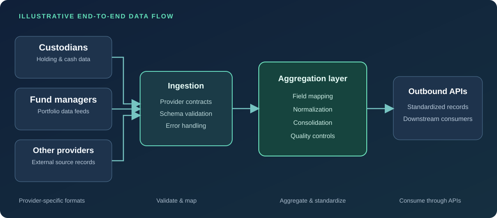

01 / FEATUREDFINTECH · PAYMENTS
Payment Transaction Analytics
 View screenshot ↗
View screenshot ↗
Explore transaction performance, approvals and declines, processing time, payment channels, and geographic distribution.
Explore real, interactive Power BI reports and evidence of how I turn complex business data into decisions.
View screenshot ↗
Explore transaction performance, approvals and declines, processing time, payment channels, and geographic distribution.
 View screenshot ↗
View screenshot ↗
Investigate fraud cases, risk scores, transaction patterns, estimated losses, and merchant and channel exposure.
 View screenshot ↗
View screenshot ↗
Explore retention and churn alongside player behavior, betting volume, GGR, NGR, and VIP segments across two report pages.
Revenue, profitability, customer growth and commercial KPIs. Currently being built; live dashboard coming later.
Expand a report below to use its filters and visualizations without leaving this website. These projects use synthetic, non-confidential data.
All three published reports are independent demonstration projects. Original Power BI files and underlying datasets are kept private. The fourth project is a planned addition, not a published report.
I'm Yervand Sardaryan, an IT Business & Systems Analyst with 6+ years of experience in FinTech, payments, banking, and fraud prevention. I bridge business goals and technical execution to deliver reliable, scalable digital solutions.
My work sits at the intersection of stakeholder needs, systems design, and delivery. I turn complex business processes into clear requirements, actionable technical specifications, and testable outcomes.
From payment processing and banking integrations to fraud detection and production support, I collaborate with product teams, developers, architects, and QA to make solutions work end to end.
Combining business analysis discipline with the practical technical understanding needed for complex financial platforms.
Transaction lifecycles, card processing, issuing and acquiring, financial system integrations, and core banking workflows.
Real-time fraud prevention, transaction data, risk indicators, decision flows, and AI/ML-assisted solutions.
Requirements elicitation, functional and technical specifications, workflow analysis, user stories, and acceptance criteria.
Explore BA Knowledge HubREST APIs, OpenAPI specifications, payload mapping, event-driven workflows, and cross-system dependencies.
Agile collaboration, backlog refinement, QA and UAT coordination, issue analysis, and release support.
Exploring practical ways to use LLMs and AI agents to accelerate documentation, analysis, and everyday BA workflows.
From iGaming incident management to enterprise data integrations, FinTech and AI-powered product delivery. Select any position to explore responsibilities and related portfolio evidence.
Defined requirements and functional specifications for payment processing, transaction monitoring, and fraud-risk capabilities.
Supported delivery of an AI-powered analytics and decisioning product using configurable business rules.
Analyzed requirements for E-Tax Administration workflows, including filing, invoicing, and risk management.
Worked across financial data analysis and reporting, while contributing to integrated data flows for investment-platform users.
Monitored financial data feeds and supported issue resolution, mapping, and data-processing verification.
Coordinated production-incident response and technical recovery for customer-impacting iGaming services.
Career dates and role descriptions are based on my professional CV. Praemium positions overlap in 2020, as listed in the CV. Portfolio architecture diagrams and examples are illustrative and do not disclose internal client implementations.
Methods, platforms and technologies I use to translate complex business challenges into practical solutions.
For additional details, see my LinkedIn profile ↗ or download my CV.
Explore business goals, stakeholders, constraints, and the actual problem to solve.
Model current and future processes, define requirements, and clarify edge cases.
Work with engineering and product teams on feasible solutions and acceptance criteria.
Support testing, implementation, and production readiness with traceable outcomes.
An illustrative BPMN 2.0 process design exploring cardless ATM cash withdrawal, digital banking integrations, one-time authorization and operational exception management.
Customers create a withdrawal request in a mobile banking app and receive a one-time code for use at an ATM. The code expires 15 minutes after generation and must never authorize more than one successful withdrawal. The model covers validation, redemption, cash dispensing and reconciliation.

Click the diagram to view it full size. This is an illustrative process overview; the editable source is kept private. Solid lines represent internal sequence flows and dashed lines represent inter-participant messages.
This is a conceptual portfolio model using synthetic requirements; it does not represent a proprietary banking implementation. Final production design would additionally specify security controls, reconciliation policies, ATM network protocols and failure-recovery rules.
A professional experience case study from my work on Praemium's Data Aggregation product, covering inbound provider feeds, transformation and aggregation, and outbound API delivery.
Role: Business Analyst / Product Owner. I worked across the integration lifecycle: onboarding and understanding incoming third-party financial data feeds, defining mapping and transformation behavior, supporting aggregation into standardized structures, and specifying delivery to external API consumers.

Understand provider-specific formats, feed contracts, field definitions and import validation requirements.
Define source-to-target mappings, normalization, aggregation and rules for exceptional or incomplete records.
Describe downstream data contracts, response expectations, dependencies and acceptance criteria for API consumers.
This section describes genuine areas of professional involvement. Its architecture and mappings are illustrative and simplified, not Praemium's internal implementation. No customer data, actual API payloads or proprietary specifications are disclosed.
An experience-based case study on AI/ML-assisted real-time decisioning, configurable business rules and custom rate cards, informed by my Business Analyst / Product Owner role at Plat.AI.
Worked at the intersection of business requirements and an AI/ML analytics product: connecting predictive scoring concepts with configurable decision rules, custom rate cards and system-integration needs. The illustration below demonstrates a possible end-to-end decision flow, not Plat.AI's internal architecture.

Conceptual architecture based on public product capabilities and a generalized workflow. No proprietary algorithms, scoring thresholds, customer data or internal screenshots are included.
Consider input quality, model score interpretation, decision outcomes and the data required to support reliable real-time processing.
Describe configurable eligibility conditions, decision precedence, rate-card selection and exception scenarios as business requirements.
Translate product needs into testable specifications, user stories, stakeholder alignment and integration behavior across product and engineering teams.
This case study reflects professional involvement with the product domain, but the workflow and examples are generalized, not a disclosure or verified reproduction of a deployed implementation. No production metrics are claimed.
Interested in connecting about business analysis, financial technology, payments, or complex systems? Let's talk.
Based in Yerevan, Armenia · Open to remote and Armenia-based opportunities